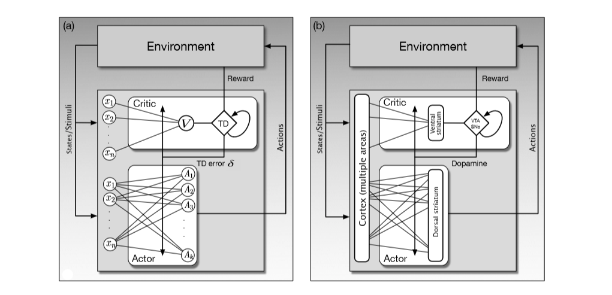

In this post, I am going to talk about the similarities between Reinforcement Learning and Neuroscience. The main area I will be focusing is the actor critic method in RL and whether our brains also functions in the same way.
Actor critic algorithm is kind of a method in which both value functions and policies are being learned. Critic is the element that learns whatever policy is being followed by the actor so that it can criticize the action choices of actor and Actor is the element that learns policies. The critic makes use of reinforcement signal also known as TD error to learn the value function by considering the policy which is being followed by the actor at this moment. This value function learned by the critic allows it to send reinforcement signal to actor. If this reinforcement signal is negative, it means that actor’s action resulted in a state which was not as good as that was expected and in simple words action taken can be classified as bad. On the other hand, if this reinforcement signal is positive then it means action taken was actually better than expected.
In our brain, we also have such components mainly know as dorsal striatum and ventral striatum. To further explain these terms, I must describe that striatum is the kind of input structure for basal ganglia (a collection of neuron groups in the forebrain). Basal ganglia are the part of the brain involved in decision making, planning and learning. As the names suggest, dorsal striatum and ventral striatum are the subdivision of striatum while the former being responsible for influencing action selection and the latter is involved in critical assignment of affective value to sensations. Ventral striatum can be considered as the critic which is being critical for different aspects o reward processing and Dorsal striatum can be stated as an actor.
To further explain these similarities, following figure can be used:

Fig(a) shows a simple actor critic method as a neural network. The actor has a layer of A neurons which are categorized from 1 to k and their output can be considered as a vector of k-dimensions. The features which are labeled as x from 1 to n have a connection to V and to each actor neuron A. These connections can also be considered as weights as in any artificial neural network. All of these weights are used to parametrize policies and value functions. Actor weights are updated to parametrize the policy and critic weights update to parametrize value function.
The critic in the fig(a) has a single V neuron which also connects with features. This neuron’s output are state values and TD which calculates TD error by combining reward signal, output of V and previous state values. The phenomena of previous state values is shown by a loop to itself. TD error calculated is then being used to update weights of both actor and critic.
The figure on the left fig(b) shows how the ANN(artificial neural network) in the right figure maps to the brain. This figure also shows that actor is the dorsal striatum and critic is the ventral striatum of the brain. This hypothesis was put forward by Takahashi et al. (2008).
The TD error is now being replaced by Dopamine which is also considered as the reinforcement signal in the brain. The cerebral cortex is now the input structure which gives the states as stimuli. The ventral striatum sends it information to VTA and SNpc , which then after combining with reward and previous stimulus are being used to create Dopamine. How is this being calculated is still an active research area.
After this Dopamine which also represents the widely branching axons of dopamine neurons whose cell bodies are in the VTA and SNpc. In short to understand VTA and SNpc, we can say that these are the cluster of neurons in the midbrain. These cluster consists of neurons which produce dopamine as a neurotransmitter.
Another important consideration is that the reward in the left part of the figure can not be considered as R we use in reinforcement learning. Many interconnected neural systems generate information related to rewards, with different structures being recruited depending on different types of rewards. Dopamine neurons receive information from many different brain areas, so the input to the SNpc and VTA labeled ‘Reward’ in fig(b) should be thought of as vector of reward-related information arriving to neurons in these nuclei along multiple input channels.
Nevertheless, this comparison can be considered as a generalization of the real mechanisms being performed within the brain. A lot has still to be found about brain and research in neuroscience can further help us to understand our own neural networks. Both reinforcement learning and neuroscience research has helped each field to progress and development in one will surely benefit the other.
This post was inspired from the book “Reinforcement Learning” by Richard S. Sutton and Andrew G. Barto.
References:
1. Image adapted from Frontiers in Neuroscience, vol. 2(1), 2008, Y. Takahashi, G. Schoenbaum, and Y. Niv, Silencing the critics: Understanding the effects of cocaine sensitization on dorsolateral and ventral striatum in the context of an Actor/Critic model.
2. http://incompleteideas.net/book/the-book-2nd.html